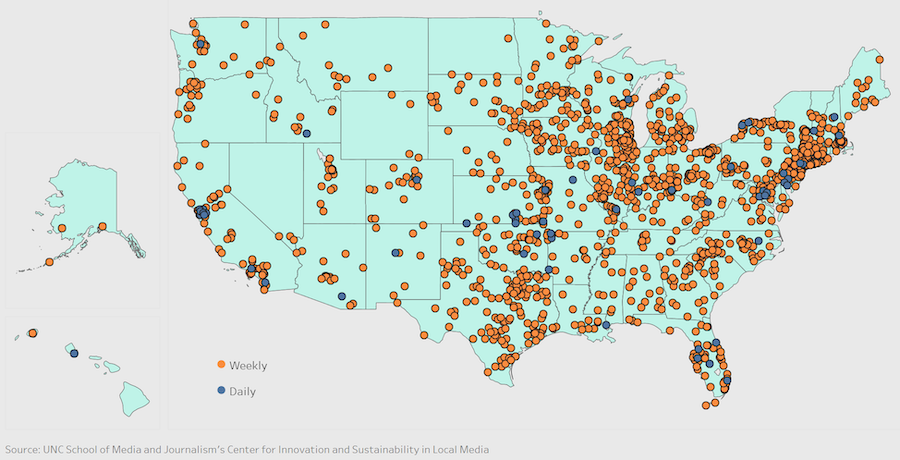
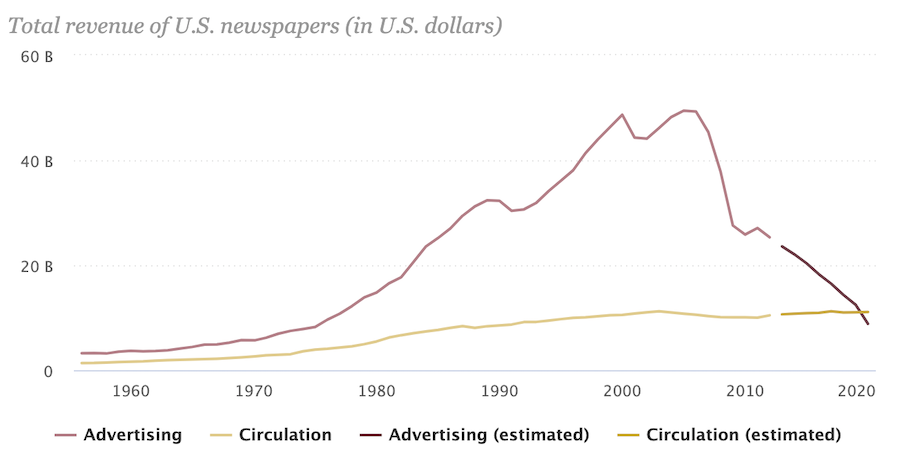
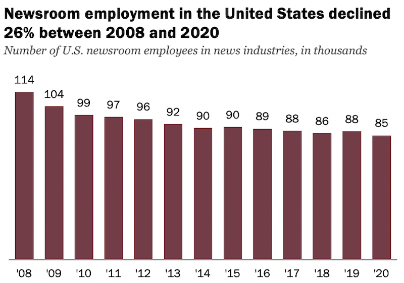

62 daily newspapers and 1,749 weekly newspapers closed or merged with other papers between 2004 and 2018.
The rise of the internet has changed how people get their news. As a result, the business model of most local papers has been rendered unsustainable.
The employees who remain are often stretched thin to cover their communities. Today, much of the content published by local papers are outsourced by larger national and regional outlets.
